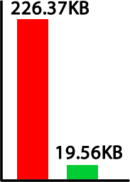

CSS3 & Mobile Performance


Fast to ....
- Load
- Render
- Respond
- Understand
- Beautiful
- Useful
- Eco-friendly
YSLOW
- Make fewer HTTP requests
Decreasing the number of components on a page reduces the number of HTTP requests required to render the page, resulting in faster page loads. Some ways to reduce the number of components include: combine files, combine multiple scripts into one script, combine multiple CSS files into one style sheet, and use CSS Sprites and image maps.
- Avoid empty src or href
You may expect a browser to do nothing when it encounters an empty image src. However, it is not the case in most browsers. IE makes a request to the directory in which the page is located; Safari, Chrome, Firefox 3 and earlier make a request to the actual page itself. This behavior could possibly corrupt user data, waste server computing cycles generating a page that will never be viewed, and in the worst case, cripple your servers by sending a large amount of unexpected traffic.
- Compress components with gzip
Compression reduces response times by reducing the size of the HTTP response. Gzip is the most popular and effective compression method currently available and generally reduces the response size by about 70%. Approximately 90% of today's Internet traffic travels through browsers that claim to support gzip.
- Put CSS at top
Moving style sheets to the document HEAD element helps pages appear to load quicker since this allows pages to render progressively.
- Put JavaScript at bottom
JavaScript scripts block parallel downloads; that is, when a script is downloading, the browser will not start any other downloads. To help the page load faster, move scripts to the bottom of the page if they are deferrable.
- Avoid CSS expressions
CSS expressions (supported in IE beginning with Version 5) are a powerful, and dangerous, way to dynamically set CSS properties. These expressions are evaluated frequently: when the page is rendered and resized, when the page is scrolled, and even when the user moves the mouse over the page. These frequent evaluations degrade the user experience.
- Reduce DNS lookups
The Domain Name System (DNS) maps hostnames to IP addresses, just like phonebooks map people's names to their phone numbers. When you type URL www.yahoo.com into the browser, the browser contacts a DNS resolver that returns the server's IP address. DNS has a cost; typically it takes 20 to 120 milliseconds for it to look up the IP address for a hostname. The browser cannot download anything from the host until the lookup completes.
- Minify JavaScript and CSS
Minification removes unnecessary characters from a file to reduce its size, thereby improving load times. When a file is minified, comments and unneeded white space characters (space, newline, and tab) are removed. This improves response time since the size of the download files is reduced.
- Avoid URL redirects
URL redirects are made using HTTP status codes 301 and 302. They tell the browser to go to another location. Inserting a redirect between the user and the final HTML document delays everything on the page since nothing on the page can be rendered and no components can be downloaded until the HTML document arrives.
- Remove duplicate JavaScript and CSS
Duplicate JavaScript and CSS files hurt performance by creating unnecessary HTTP requests (IE only) and wasted JavaScript execution (IE and Firefox). In IE, if an external script is included twice and is not cacheable, it generates two HTTP requests during page loading. Even if the script is cacheable, extra HTTP requests occur when the user reloads the page. In both IE and Firefox, duplicate JavaScript scripts cause wasted time evaluating the same scripts more than once. This redundant script execution happens regardless of whether the script is cacheable.
- Reduce the number of DOM elements
A complex page means more bytes to download, and it also means slower DOM access in JavaScript. Reduce the number of DOM elements on the page to improve performance.
- Avoid HTTP 404 (Not Found) error
Making an HTTP request and receiving a 404 (Not Found) error is expensive and degrades the user experience. Some sites have helpful 404 messages (for example, "Did you mean ...?"), which may assist the user, but server resources are still wasted.
- Avoid AlphaImageLoader filter
The IE-proprietary AlphaImageLoader filter attempts to fix a problem with semi-transparent true color PNG files in IE versions less than Version 7. However, this filter blocks rendering and freezes the browser while the image is being downloaded. Additionally, it increases memory consumption. The problem is further multiplied because it is applied per element, not per image.
- Do not scale images in HTML
Web page designers sometimes set image dimensions by using the width and height attributes of the HTML image element. Avoid doing this since it can result in images being larger than needed. For example, if your page requires image myimg.jpg which has dimensions 240x720 but displays it with dimensions 120x360 using the width and height attributes, then the browser will download an image that is larger than necessary.
- Make favicon small and cacheable
A favicon is an icon associated with a web page; this icon resides in the favicon.ico file in the server's root. Since the browser requests this file, it needs to be present; if it is missing, the browser returns a 404 error (see "Avoid HTTP 404 (Not Found) error" above). Since favicon.ico resides in the server's root, each time the browser requests this file, the cookies for the server's root are sent. Making the favicon small and reducing the cookie size for the server's root cookies improves performance for retrieving the favicon. Making favicon.ico cacheable avoids frequent requests for it.
Page Speed
- Leverage browser caching
- Enable compression
- Defer parsing of JavaScript
- Minimize request size
- Specify a cache validator
- Optimize images
- Minify JavaScript
- Minify HTML
- Specify image dimensions
- Specify a character set
- Specify a Vary: Accept-Encoding header
- Reduce request serialization
- Eliminate unnecessary reflows
- Avoid long-running scripts
- Avoid CSS @import
- Avoid bad requests
- Enable Keep-Alive
- Make landing page redirects cacheable
- Minify CSS
- Minimize redirects
- Optimize the order of styles and scripts
- Put CSS in the document head
- Remove query strings from static resources
- Serve resources from a consistent URL
- Serve scaled images
Device limitations!
- UI responsiveness
- Battery Life
- Latency
- Memory
- Plethora of Screen Sizes
Phones aren't Laptops
More powerful browsers.
Less powerful CPUs
UI Responsiveness
UI responsiveness - Touch Events
- Touch Event: 300 - 500ms delay
- Extra touches aren't forgotten
- Co-opt with touch events with JS
- Accept input
- Provide user feedback
- Update the UI
Viewport
<meta name="viewport" content="width=device-width,
initial-scale=1, maximum-scale=1"/>
- width
- Size of the viewport in number of pixels or
device-width(width of screen) - height
- Height of the viewport in number of pixels or
device-height(height of screen) - initial-scale
- zoom level when page is first loaded
- maximum-scale
- minimum-scale
- user-scalable
- Are users allowed to zoom the page
@viewport {
width: device-width; zoom: 0.5;
}
- min-width
- ‘auto’, ‘device-width’, ‘device-height’, an absolute length, or a percentage as specified
- max-width
- ‘auto’, ‘device-width’, ‘device-height’, an absolute length, or a percentage as specified
- width
- min-height
- ‘auto’, ‘device-width’, ‘device-height’, an absolute length, or a percentage as specified
- max-height
- ‘auto’, ‘device-width’, ‘device-height’, an absolute length, or a percentage as specified
- height
- zoom
- auto, positive number or percentage
- min-zoom
- Minimum zoom factor allowed. auto, positive number or percentage
- max-zoom
- Maximum zoom factor allowed. auto, positive number or percentage
- user-zoom
- zoom or fixed. User can or can't zoom in/out.
- orientation
- auto, portrait or landscape.
If <meta> is set to disable zoom, in Chrome and Firefox there is no delay on onClick events.
Batteries
Battery
Images
- JPEGs ≻ GIFs and PNGs
- Images ⇒ energy consumption
- Rendering energy is proportional to # and size of images.
JavaScript
- Render cost: JS (and CSS) ≃ images
- Dynamic JS: ⬆ rendering cost (can't be cached).
- JS (download, parsing & executing) can be the most energy consuming web page component
JavaScript drains the battery
- All scripts loaded and parsed (even if not used)
- Reduce JS to only what is needed
- Are libraries really necessary?
- Include only functions used by page to reduces energy use.
- Goal of most: equalize across browsers
(not necessry in mobile space) - Libraries simplify web development, but increase energy use.
- You don't need a framework for that
Battery
CPU Drains the battery. Avoid using it!
- Minimize the DOM
- Avoid reflows
- Avoid repaints
- Minimize JavaScript (size and activity)
- No JavaScript animations
- Do you really need library/framework?
- Use darker colors if you can
Latency
Latency
Reduce the number of DNS lookups and HTTP Requests
Each host is a different lookup!!
Latency

- Issue: Requests take longer to complete
- Solution: Reducing requests improves performance
Step 1: Don't Redirect!!!!
Step 2: Reduce Requests
Sprites
Best Practices (for desktop)
<!DOCTYPE HTML> <html> <head> <meta charset="UTF-8"> <title>Titles are good for SEO</title> <link rel="stylesheet" href="prettyWhenItLoads.css"/> </head> <body> <!-- lots of good content --> <script src="dontBlockHTMLandCSS.js"></script> </body> </html>
Reduce HTTP requests
<!DOCTYPE HTML>
<html>
<head>
<meta charset="UTF-8">
<title>Titles are good for SEO</title>
<style id="keyword">
/* lots of styles */
</style>
</head>
<body>
<!-- lots of good content -->
<script id="otherKey">
/* JS that makes site work
</script>
<script>
/* localStorage & cookies script*/
</script>
</body>
</html>
Memory
High memory usage causes a slow UI
When you are out of memory, you are out of memory
Browser crashes to free up memory
Memory
| Device | Memory |
|---|---|
| iPhone 3G | 128MB |
| iPhone 3GS | 256 MB |
| HTC Inspire | 768 MB |
| Galaxy Nexus | 1024 MB |
| iPad 1 | 256 MB |
| iPod Touch (4) | 256 MB |
| iPad 3 | 1024 MB |
| iPad Mini | 512 MB |
| MacBook Pro | 16 GB |
Mobile Norm: 512MB of RAM, with 1GHz Processor
Mobile Norm: Moving toward 1GB RAM
Developing without mobile in mind
leads to sloppy App Dev
Browser shares Memory
| Running Services | ||
| Other | 73MB Avail: 255MB + 182MB in 21 | |
| Calendar | 8.4MB | |
| Process:com.htc.bgp | ||
| ObexService | 31:52:14 | |
| Started by application: Touch to stop | ||
| AT&T Navigator | 8.4MB | |
| Process: com.telnav.app.android.congular | ||
| ResoucePreLoader | Restarting | |
| Started by application: Touch to stop | ||
| AT&T Spots | 2.4MB | |
| Process: com.matchboxmobile.wasp | ||
| WispService | 31:52:14 | |
| Started by application: Touch to stop | ||
| Media | 4.1MB | |
| Process: android.process.media | ||
| DownloadService | 31:52:14 | |
| Started by application: Touch to stop | ||
| PVWmdrmService | 2.2MB | |
| Process: com.pv.wmdrmservice | ||
| PVWmdrmService | 31:52:14 | |
| Started by application: Touch to stop | ||
Sprites: Best choice?
Not enough to GZip


Rendered media are still the same size.
- Reduce File Size
- Reduce Image Size
Video, Audio, Images and Text can be compressed to save bandwidth, but they're uncompressed in the browser.
Reduce File Size

Image Alpha
Reduce Image Size
Don't send big images to small screens?
Images 1024px or bigger are too big for memory
http://src.sencha.io/320/480/http://unicorns.com/kitten.jpg
<picture>
srcset attribute
Clown Car Technique
Fonts rather than images
Varied Screen Sizes
- Smart Phone
- Tablet
- Laptop
- Monitor
- TV
- Wrist Watch
portrait v. landscape?
high and low resolution?
media queries
<link rel='stylesheet' media='screen and (min-width: 320px) and (max-width: 480px)'
href='css/smartphone.css' />
@media screen and (max-width: 480px){
body {
background-image: url(small/bgimage.jpg);
}
}
@media screen and (min-width: 481px) and (max-width: 960px){
body {
background-image: url(medium/bgimage.jpg);
}
}
@media screen and (min-width: 481px) and (max-width: 960px),
screen and (min-width:540px) and (-webkit-min-device-pixel-ratio: 2){
body {
background-image: url(large/bgimage.jpg);
}
}
Resource: What can you query
- (min/max)-width: viewport width
- (min/max)-height: viewport height
- (min/max)-device-width: screen width
- (min/max)-device-height: screen height
- orientation: portrait(h>w) | landscape(w>h)
- (min/max)-aspect-ratio: width/height
- (min/max)-device-aspect-ratio: device-width/height
- (min/max)-color:
- (min/max)-color-index:
- (min/max)-monochrome: 0 | 1+
- (min/max)-resolution: 72dpi | 100dpcm
- scan: progressive | interlace (tv)
- grid: 0 | 1 (grids (like tty) or bitmap)
- See Media Queries Spec
Resource: How do you query it?
Media Query Syntax/Punctuation
media="only print and (color)" media="only screen and (orientation: portrait)" media="not screen and (color)" media="print, screen and (min-width: 480px)"
Media Queries in SVG
Media Queries in SVG
SVG with Media Queries
Clown Car Technique with Object
CSS Masking


88KB
+
4KB
<
551KB
div {
background-image:url(images/frame.jpg);
-webkit-mask: url(images/framemask.png);
}
Masking example
Is CSS3 the Solution?
Properties
- rounded Corners
- box-shadow
- text-shadow
- background-position
- background-repeat
- multiple background images
- border-image
- gradients
- @media queries
Benefits
- Fewer HTTP Requests
- Updatable
- Scalable
- Transitionable
- Animatable
- Fewer DOM Nodes
CSS3 ISN'T always the Solution!
UI Features can ruin your web app
- Enlarged Fonts
- Box Shadow (inset)
- Text Indent
- Gradients
- background-size: cover
- Sprites (of large images)
- ‘Non-rendered’ content
- Recalculating / Repainting the UI
Static images may render faster than CSS effects
Fonts

Large and Small Fonts
Large and Small Fonts
Alpha transparent effects
- Not rendered as static bitmap
- Evaluated each repaint
Shaders
Text-indent
- Use CSS Clip
- Position text up instead of left
Large Gradients
- Keep gradients small
- Requires CPU to create
- Stored in memory
- Memory: Radial > Linear
- Render Speed:
Images often faster than Gradients

transitions
code {
color: black;
font-size: 85%;
background-color: rgba(255,255,255,0.9);
transition: all 2s ease-in 50ms;
}
code:hover {
color: red;
font-size: 120%;
background-color: rgba(255,255,255,0.8);
}
Requires reflow!
transitions with transforms
code {
color: black;
font-size: 85%;
background-color: rgba(255,255,255,0.9);
transition: all 2s ease-in 50ms;
}
code:hover {
color: red;
transform: scale(1.4);
transform-origin: 0 0;
background-color: rgba(255,255,255,0.8);
}
Only repaints
Hardware Acceleration: 3d Transforms
div {
transform: translateZ(0);
}
translateZ(0)
Composited mage in memory == H x W x 4
Take advantage of hardware acceleration, but don't abuse it. GPU accelerated elements eat video memory
Images
Use background images, instead of foreground images.
Background images are first rendered with image data send to Core Animation. Safari doesn't render <img> first. The decoded image file is sent, as is, pre-rendered, to the Core Animation as a new layer. Foreground images is sent to Core Animation as image data which it has to keep in graphics memory. This uses more memory.
Remember...
Your users may not be tethered
and their memory may be very limited.
Thank you
- Estelle Weyl
- standardista.com
- @estellevw